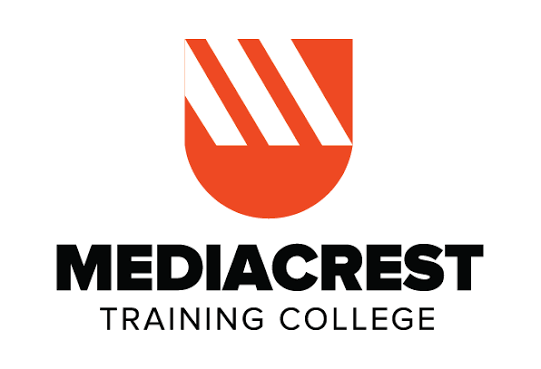

About Me
My name is Ian Moses Kitavi, and I am a Systems Integration Specialist. I have a strong background in systems integration, with experience in designing, implementing, and maintaining integrated technology solutions. I am passionate about technology and continuously seek to improve my skills and knowledge in the field.
I am a seasoned support professional with a proven track record of delivering high-quality technical support and ensuring seamless integration of diverse technology systems.
My expertise lies in understanding complex systems, identifying integration challenges, and implementing effective solutions that enhance operational efficiency. I am committed to providing exceptional support and ensuring that technology systems work harmoniously to meet organizational goals.
Skills
- Systems Integration
- Technical Support
- Problem Solving
- Communication and Collaboration
Education
- Bachelor's Degree in Business and Information Technology - Greenwich University
- Certified Software Engineer - Mediacrest Training College


Projects
- Project 1: Merchant Integration & Onboarding.
- Project 2: Wallet & Payment API Integration.
- Project 3: M-Pesa Daraja API Integration.
- Project 4: API Testing & UAT Automation.
Contact
If you would like to get in touch with me, please feel free to reach out via email
- Email: mosesian91@gmail.com
- Phone: +254 724 711784
- LinkedIn: Ian Moses Kitavi
- GitHub: yungrizy